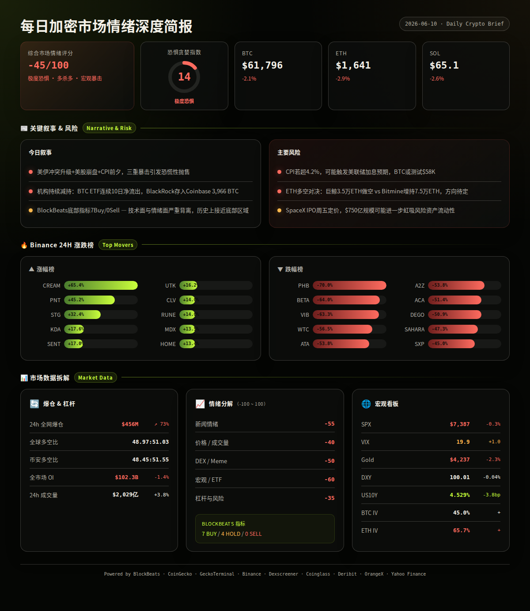
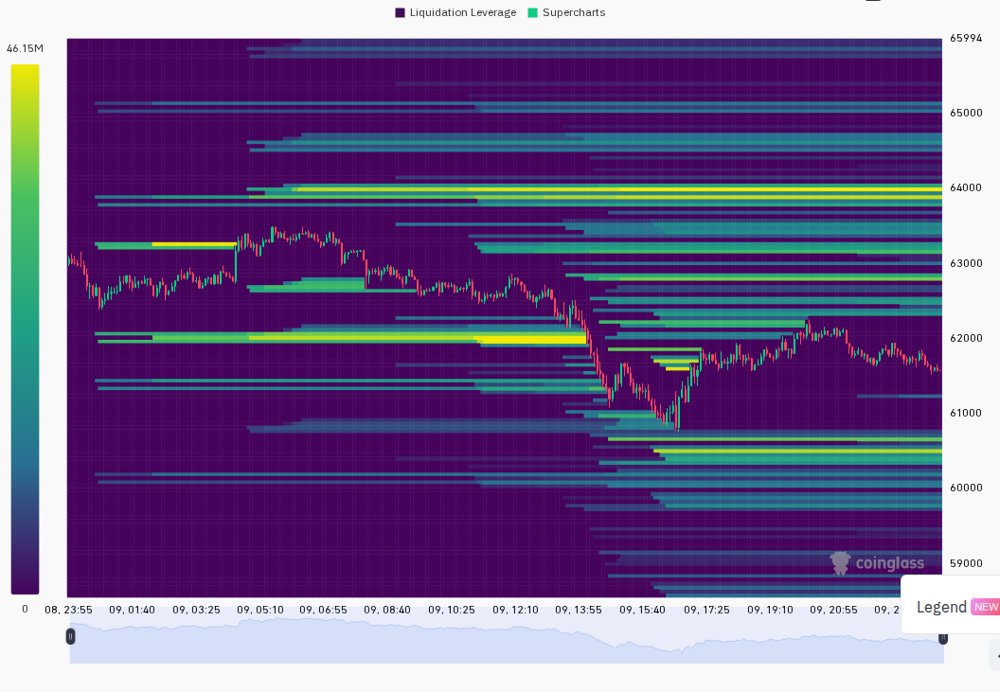
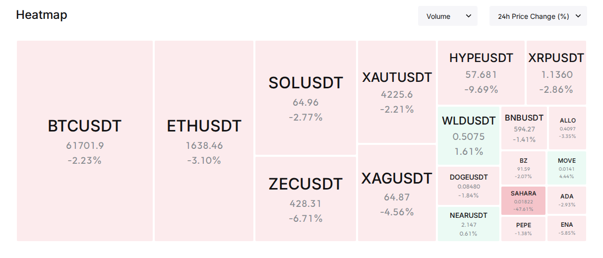

以下是完整报告内容（已按两段式结构输出）：
市场进入极度恐惧区间（F&G 14），多重利空叠加：美国对伊朗发动第二轮打击、纳斯达克单日跌超3.5%、SpaceX IPO吸走流动性、明晚CPI数据令市场如履薄冰。BTC一度跌穿$61,000，24小时全网爆仓$4.56亿且以多头为主，机构与散户情绪同步恶化。(BlockBeats, Coinglass, multi-source)
24h变化: 情绪 ↘(极度恐惧) | BTC ↘2.1% | ETH ↘2.9% | VIX 19.9(正常但逼近恐慌) | 爆仓 ↗73% | 成交量 ↗3.8% (multi-source)
宏观/地缘政治冲击 — 过去24小时最大的市场驱动力来自地缘升级与美股抛售，加密货币难以独善其身。
信息 1: 美国对伊朗发动第二轮打击，目标为防空与雷达系统；此前伊朗击落一架美军阿帕奇直升机，特朗普宣布将回击。伊朗革命卫队声称已向美军区域目标发射导弹和无人机。中东局势全面升级至2024年以来最紧张状态。 (BlockBeats #350373, #350362)
信息 2: 美股遭遇血洗，纳斯达克盘中跌幅扩大至3.5%，标普500跌超2%，费城半导体指数暴挫。NVDA -3.84%, MRVL -14.9%, AMD -10.1%, INTC -9.5%。SemiAnalysis报告指出AI数据中心两大关键技术路径（800VDC架构、CPO光模块）出货大幅推迟，引发光通信和半导体板块集体崩盘。 (BlockBeats #350366, #350360)
信息 3: 明晚（6月10日）美国5月CPI数据即将公布，市场预期名义CPI年率将升至4.2%（2023年6月以来最高），核心CPI 3.0%。TD Securities预计通胀仍顽固偏高，下半年核心通胀难有明显回落。70%经济学家认为美联储今年剩余时间不会降息，新主席Kevin Warsh将首次主持FOMC会议。 (BlockBeats #350319, #350345)
BTC/ETH/SOL核心叙事 — 机构持续减持，链上数据恶化，鲸鱼活动加剧市场波动。
信息 4: 比特币一度跌破$61,000至$60,958，24小时内下跌4.61%。随后小幅反弹至$61,796。Wintermute指出加密市场缺乏新买盘，$50,000-$59,000区间无有效支撑；Bitfinex报告称BTC已从"积累阶段"转入"派发阶段"，现货成交量差显著转负，短期持有者成本已低于市场均价$77,800，每次反弹均面临新抛压。 (BlockBeats #350356, #350300, #350340)
信息 5: 链上数据显示BlackRock向Coinbase存入3,966 BTC（约$2.44亿），可能为ETF赎回准备。现货ETF已连续10日净流出，5月总流出约$29.7亿。Strategy创始人Michael Saylor在5月底出售32 BTC，为2022年以来首次，象征意义引发市场关注。 (BlockBeats #350307, #350300)
信息 6: ETH巨鲸继续加码做空，通过Aave抵押$1.32亿稳定币借出35,000 ETH并全部转入Binance抛售，均价约$1,672。另一边，Tom Lee的Bitmine在过去8小时增持75,000 ETH（约$1.23亿），形成多空激烈对峙。 (BlockBeats #350374, #350377)
DeFi/安全事件/VC — 机构融资持续但安全风险频发。
信息 7: DeFi借贷协议Morpho完成$1.75亿融资，由a16z Crypto、Paradigm和Ribbit Capital领投，估值约$200亿。Morpho TVL约$66亿，已吸引Coinbase、Kraken等机构采用。 (BlockBeats #350306)
信息 8: Humanity Protocol因私钥泄露遭攻击，官方确认非智能合约漏洞，而是生产环境密钥备份在不安全开发机上。目前正在制定资金恢复/补偿方案和代币合约升级计划。 (BlockBeats #350352)
信息 9: Token of Power遭Tornado Cash关联地址攻击，损失约$158万，资金已通过Tornado Cash混币。 (BlockBeats #350327)
交易所/机构 — 积极布局与监管推进并行。
信息 10: Kraken成为2026年FIFA世界杯官方加密货币交易所合作伙伴，该赛事将首次扩至48队，预计吸引超60亿全球观众。 (BlockBeats #350317)
信息 11: 美国众议院筹款委员会共和党成员提出6项加密货币税收法案，涵盖挖矿/质押征税、报告要求、捐赠处理等，旨在系统化调整加密税收框架。听证会证人为Fidelity、Coinbase、Coin Center等。 (BlockBeats #350344)
板块轮动 — CoinGecko 24h板块变化
信息 12: 24h涨幅前三板块：Duck-Themed +37.4%、Telegram Apps +30.4%、ERC 404 +24.6%。跌幅板块普遍温和，GENIUS Act合规稳定币 -0.7%、MiCA合规稳定币 -0.7%、美债支持稳定币 -0.7%。市场避险特征明显，资金从高风险板块撤向稳定币相关板块。 (CoinGecko)
Binance 24h涨跌榜
信息 13: 24h涨幅前十：CREAM +65.4%, PNT +45.2%, STG +32.4%, KDA +17.6%, SENT +17.0%, UTK +16.2%, CLV +14.0%, RUNE +14.0%, MDX +13.5%, HOME +13.4%。跌幅前十：PHB -70.0%, BETA -64.0%, VIB -63.3%, WTC -56.5%, ATA -53.8%, A2Z -53.8%, ACA -51.4%, DEGO -50.9%, SAHARA -47.3%, SXP -45.0%。跌幅榜多个代币跌幅超50%，存在流动性危机或恐慌性抛售特征。 (Binance)
风险 1: 美股抛售引发加密联动下跌 → 观察: 若今晚美股继续下跌且VIX突破20进入恐惧区间，BTC可能再次测试$60,000支撑，甚至触发$8.23亿多头清算瀑布。失效条件: 若CPI数据低于预期（名义CPI < 4.0%），风险资产可能迎来报复性反弹。 (BlockBeats, Yahoo Finance, analysis)
风险 2: 6月10日CPI数据超预期 → 观察: 若名义CPI > 4.2%且核心CPI > 3.0%，市场可能定价美联储加息而非降息，加密市场将面临新一轮去杠杆。失效条件: CPI数据符合预期或低于预期，恐慌情绪缓解，但中东局势仍是独立风险。 (BlockBeats, analysis)
风险 3: 中东局势持续升级 → 观察: 若霍木兹海峡封锁持续至Q3，原油价格飙升将推高通胀，形成"滞胀"环境，对所有风险资产（包括BTC）构成压力。失效条件: 若美伊达成临时停火协议，原油价格回落，地缘溢价消退。 (BlockBeats, analysis)
风险 4: ETH多空对峙白热化 → 观察: ETH鲸鱼已累计借出35,000 ETH做空 vs Bitmine增持75,000 ETH做多，若ETH跌破$1,600可能触发空头进一步加仓；若反弹突破$1,700则可能引发空头回补。 (BlockBeats #350374, #350377)
风险 5: SpaceX IPO资金虹吸效应 → 观察: SpaceX IPO超募3.5-4倍（$2,500亿需求 vs $750亿计划），6月12日定价日前后可能从加密市场进一步抽取流动性。失效条件: 若SpaceX上市首日表现不佳，回流资金可能利好加密。 (BlockBeats, analysis)
风险 6: Strategy (MSTR)的BTC持有策略压力 → 观察: MSTR下跌8%，Saylor出售BTC象征意义大，STO/SF分析指出Strategy以低于盈亏平衡mNAV的价格增发新股购买BTC，每股BTC含量反而下降0.19%。若MSTR继续下跌可能引发BTC相关股票的连锁抛售。失效条件: 若BTC价格反弹带动MSTR回升，市场情绪改善。 (BlockBeats #350371, article)
非财务建议声明: 本报告仅提供市场数据和情绪分析，不构成任何买卖建议。
6月10日 — 美国5月CPI数据公布 — 市场预期年率4.2%，若超预期极度利空，若低于预期则可能引发反弹 (BlockBeats, analysis)
6月11日 — 美国5月PPI数据公布 — 若PPI同步走高确认通胀压力，利空 (BlockBeats, analysis)
6月12日 — SpaceX IPO定价日 — 大规模IPO可能从风险资产抽取流动性，中性偏空 (BlockBeats #350372)
6月12日 — Kraken FIFA世界杯合作伙伴正式启动 — 加密采用长期利好，短期影响有限 (BlockBeats #350317)
6月15日 — TON代币正式更名为GRAM — 生态事件，中性 (BlockBeats #350316)
6月16-17日 — FOMC会议，新主席Kevin Warsh首次主持 — 70%经济学家预期按兵不动，关注点阵图和前瞻指引 (BlockBeats #350319)


=== 第二段：数据与技术面 ===
整体评分: -45/100
5个维度评分：
新闻情绪: -55/100 — 地缘冲突升级、美股暴跌、BTC跌破关键支撑、机构持续减持、做空力量加剧。BlockBeats 24h新闻以极度负面为主。 (BlockBeats)
价格/成交量: -40/100 — BTC/ETH/SOL全线下跌2-3%，成交量虽小幅放大但以抛售驱动为主，反弹无力。BTC从$63,500跌至$60,958后仅小幅回升至$61,800，多头信心严重不足。 (Binance, CoinGecko)
DEX/meme活跃度: -50/100 — GeckoTerminal Solana趋势池成交量极低（$0数据），链上DEX活动大幅降温。HYPE（Arthur Hayes清仓）等此前热门标的失去动能。 (GeckoTerminal, analysis)
宏观/ETF/流动性: -60/100 — SPX -0.26%（连续下跌）、VIX逼近20恐惧线、DXY走强至100.01、Gold同步下跌（BTC-Gold正相关）、CPI公布前夕市场极度谨慎。BTC ETF连续10日净流出，5月总流出$29.7亿。 (Yahoo Finance, BlockBeats)
杠杆与风险: -35/100 — 24h爆仓$4.56亿（↗73%），多头爆仓占比约77%（$2.84亿长 vs $0.84亿短），多头挤压明显。持仓量小幅下降1.35%至$1,023亿，资金费率趋近于零甚至负值。BTC ATM IV 45%属正常区间但ETH IV 65.7%显示altcoin恐慌溢价。 (Coinglass, Deribit, analysis)
BlockBeats 底部/顶部指标完整列表（11项）:
· 整体市场流动性指数: Buy
· 比特币流动性指数: Buy
· 以太坊流动性指数: Buy
· 过去24小时累积比特币流动性指数: Buy
· 整体市场流动性（以比特币为单位）: Buy
· 合约多空比偏离指数: Hold
· 山寨币抗跌指数: Hold
· Bitfinex BTC/USD 溢价: Hold
· USDC/USDT 溢价: Hold
· Binance USDT 借贷利率: Buy
· 持仓量加权资金费率年化利率: Buy
综合: 7 Buy / 0 Sell / 4 Hold — 多个底部技术指标发出买入信号，暗示从流动性角度看市场接近底部区域；但情绪面与宏观面极度不利，指标与情绪形成背离。这种背离在历史上通常意味着底部正在形成但过程可能持续数周。 (BlockBeats, analysis)
BTC: $61,796，24h -2.09%，24h成交量$13.48亿，日内高$63,526 / 低$60,780。24根1小时K线显示BTC从$62,500区间午后13:00-15:00急跌至$61,132（单小时-1.17%），随后在$61,100-$62,200区间横盘整理。premiumIndex: 标记价$61,786 vs 指数价$61,812，期货贴水-0.042%（轻度看空）。 (Binance)
ETH: $1,641，24h -2.94%，24h成交量$6.37亿，日内高$1,697 / 低$1,614。走势与BTC同步但跌幅更大，熊市中ETH beta更高。premiumIndex: 标记价$1,641.5 vs 指数价$1,641.8，期货贴水-0.019%（轻度看空）。 (Binance)
SOL: $65.11，24h -2.56%，24h成交量$2.03亿，日内高$67.47 / 低$63.54。跌幅介于BTC与ETH之间。premiumIndex: 标记价$65.06 vs 指数价$65.11，期货贴水-0.069%（轻度看空）。 (Binance)
全球市场: 总市值$2.21万亿，24h成交量$935.5亿，BTC市值占比55.9%，ETH占比8.9%。BTC.D稳定在55%+，熊市资金向BTC集中的避险特征持续。 (CoinGecko)
衍生品杠杆（CoinGecko全交易所数据）:
数据获取受限（API返回异常），参考Binance/Bybit/Hyperliquid OI比较：
Binance OI: $179亿（6月8日），成交量$385亿
Bybit OI: $92.7亿，成交量$147亿
Hyperliquid OI: $59.6亿，成交量$61.1亿
三大平台持仓总量约$371亿，市场主导权仍在Binance。 (BlockBeats contract)
注意: Binance CoinGecko衍生品数据显示BTC资金费率最高为MEXC +0.04%，Binance +0.043%；ETH资金费率Binance为-0.004%（负值，空头主导）。整体资金费率偏低，无过热杠杆迹象。 (CoinGecko)
清算数据（Coinglass）:
24h全网爆仓$4.56亿，较前日暴增73%。全球多空比48.97:51.03（短略多于长），Binance TV多空比48.45:51.55。爆仓以多头为主（约$2.84亿长 / $0.84亿短），多头挤压特征明显——价格下跌→多头被迫平仓→进一步推低价格。 (Coinglass)
宏观看板:
SPX: 7,387（24h -0.26%, 5d -2.21%）
VIX: 19.9（+1.0，Normal区间但逼近20恐惧线）
DXY: 100.01（24h -0.04%, 7d +0.66%）— 美元偏强，对风险资产构成压力
US10Y: 4.529%（24h -3.8bp, 7d +4.2bp）— 长端利率在CPI前小幅回落但维持高位
Gold: $4,237（24h -2.28%, 5d -5.33%）— 黄金与BTC同步下跌，显示当前为流动性危机式普跌而非避险轮动。BTC-SPX相关性走高（同跌），BTC-Gold相关性正向。 (Yahoo Finance, BlockBeats)
期权波动率（Deribit）:
BTC ATM IV: 45.0%（BTC-13JUN26-62500-C，正常区间40-60%）
ETH ATM IV: 65.7%（ETH-11JUN26-1675-C，偏高区间）
ETH-BTC IV Spread: +20.7个百分点（>15pp阈值，显示altcoin市场恐慌溢价显著，市场预期ETH波动率远高于BTC）。VIX（19.9）与BTC IV（45%）的差距反映加密市场对尾部风险的定价远高于传统市场。 (Deribit)
ZEC (Zcash): $452.85，24h -X%（CG trending #2）。催化剂: "BTC OG Insider Whale" Garrett Jin 2x杠杆做多27,723 ZEC（约$1,190万），Solana上ZEC交易活跃。风险: Jin的仓位已有$81.2万浮亏，若ZEC继续下跌可能面临强制平仓。DEX流动性有限。 (CoinGecko, BlockBeats, Dexscreener)
HYPE (Hyperliquid): $62.31，24h变动显著（CG trending #6）。催化剂: 此前Arthur Hayes宣布清仓HYPE和NEAR，理由为AI泡沫破裂风险、油价上涨及选举不确定性。Solana上HYPE DEX池流动性$499万，24h成交量$1.04亿。风险: Hayes清仓信号+市场整体避险情绪+AI叙事降温。 (CoinGecko, BlockBeats)
MORPHO (Morpho): CG trending #15。催化剂: 完成$1.75亿融资（a16z Crypto/Paradigm领投，估值$200亿），DeFi机构借贷叙事。风险: 市场整体下跌环境下，DeFi代币估值承压；Morpho TVL $66亿但代币流通市值和流动性需验证。 (CoinGecko, BlockBeats)
PENGU (Pudgy Penguins): CG trending #5。催化剂: NFT/消费品牌叙事持续发酵。风险: 市场避险情绪下Meme/NFT类资产波动性极大；需验证DEX流动性能否支撑市值。 (CoinGecko)
Solana链上资金流（BlockBeats top10_netflow）:
· HYPE: 净流入$307.5万（24h成交量$1.04亿）
· ATH: 净流入$116.9万（市值$8,935万）
· SYRUPUSDC: 净流入$74.3万（市值$13.3亿）
· WBTC (Solana): 净流入$63.8万
· ZEC: 净流入$50.1万（市值$3,575万）
Solana链上净流入以HYPE为主，其余币种流入规模有限，链上活跃度整体偏低。 (BlockBeats)
注意: GeckoTerminal Solana趋势池和Megafilter API接口返回异常或空数据，本周Solana DEX活跃池数据缺失，DEX板块数据参考链上净流量。 (GeckoTerminal)
情景 1 (概率: 45%, 置信度: 高): 6月10日CPI数据超预期 → 市场出现最后一跌。BTC测试$58,000-$60,000支撑区间，ETH测试$1,500-$1,550，SOL测试$58-$60。VIX突破20，F&G进一步下探至个位数。关键条件: 名义CPI > 4.2%且核心CPI > 3.0%，叠加中东局势无缓和信号。若发生则BTC目标: $58,500, ETH: $1,520。此后若BlockBeats底部指标继续保持多数Buy信号，可能出现短期超卖反弹。 (analysis)
情景 2 (概率: 30%, 置信度: 中): CPI数据符合或略低于预期 → 市场出现短期喘息式反弹。BTC回升至$63,000-$64,500，ETH回升至$1,680-$1,720，空头回补推动。但反弹可能被中东局势和SpaceX IPO吸金效应限制。关键条件: 名义CPI 4.0-4.2%区间，美股止跌企稳。若发生则BTC目标: $63,500, ETH: $1,690。反弹后仍可能再度回落，不宜追高。 (analysis)
情景 3 (概率: 25%, 置信度: 低): 美伊达成临时停火协议 + CPI低于预期 → 风险资产全面反弹。BTC急速拉升突破$65,000，ETH突破$1,800，SOL突破$70。空头挤压（$9.81亿空头清算待触发）加速涨势。关键条件: 中东停火新闻确认 + CPI < 4.0% + SpaceX IPO定价低于预期缓解吸金压力。若发生则BTC目标: $66,000+, ETH: $1,850+。此情景需要多重条件同时满足，概率较低但一旦发生涨幅可观。 (analysis)
以上为基于当前数据的概率判断，不构成交易建议。